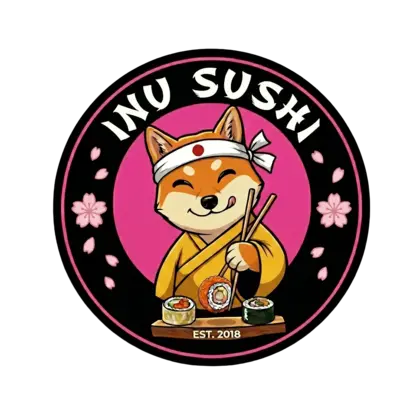

Inu Sushi · Japomexa · Tlalnepantla, Estado de MéxicoAviso de privacidad
Última actualización: 27 de agosto de 2026
Esto pasa con tu información cuando nos pides por WhatsApp.
Qué recibimos
- Tu número de WhatsApp.
- Tu nombre de perfil, si tu privacidad lo comparte.
- Lo que nos escribes: productos, cantidades, notas.
Para qué la usamos
- Preparar y entregar tu pedido.
- Llevar el registro de comandas de la cocina.
- Mientras armas tu pedido, guardamos el paso en el que vas. Se borra al confirmar o cancelar.
Con quién la compartimos
Con nadie fuera de Inu Sushi. No vendemos tu información.
Cuánto tiempo la guardamos
El pedido confirmado queda en nuestro registro de comandas. La conversación en curso se borra sola.
Tus derechos
Pide que corrijamos o borremos tu información. Escríbenos al mismo WhatsApp, o a danielvaronafranco@gmail.com.